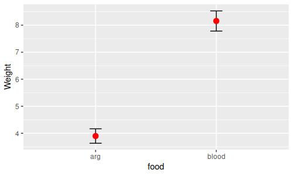
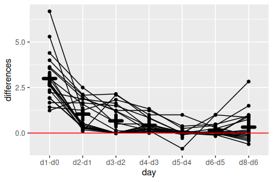
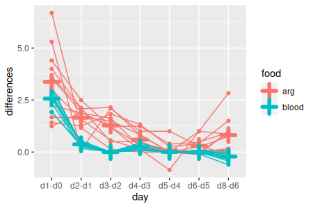
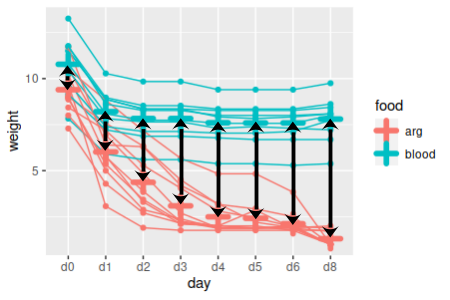
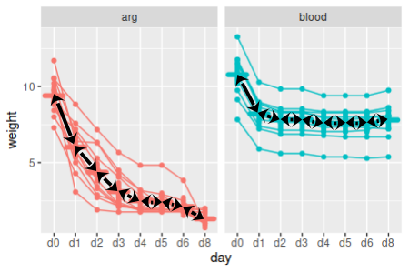
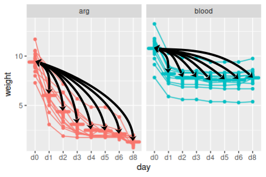
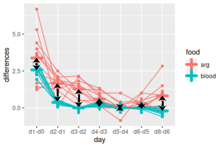

We're a little short on time this semester, so we're skipping over the exercise on univariate repeated measures analysis (RMA) that I usually have students do. If we had done the univariate approach we would have found that it was not appropriate for the data set we're using, and would want to use the multivariate approach instead. I'll briefly explain here why this is the case.
Repeated measurements of the same subjects are not independent, and analyzing the data with a method that assumes the data are independent can be very inaccurate. There is a univariate ANOVA model that is able to account for the lack of independence between repeated measurements of individuals, called repeated measures ANOVA, and that is the univariate method we are skipping over. Repeated measures ANOVA makes a distinction between the treatments applied to subjects (called the between-subjects effects) and the change over time in response by each of the subjects (called the within-subjects effects), and tests for main effects and interactions between them. It works well, and gives high statistical power, when its assumptions are met.
However, repeated measures ANOVA has an additional assumption, called sphericity, that can be difficult to meet. Sphericity is the assumption that the variances of differences between successive time points are the same, and it is tested with the Mauchly test. The data we are about to analyze failed the Mauchly test, so shouldn't be analyzed using univariate RMA.
We can use MANOVA to reproduce tests of the same effects we would have tested with univariate RMA, and this approach is called profile analysis. The questions we will address are the same as with univariate RMA, but because MANOVA does not assume anything about the variances of the response variables being the same as one another we can use it when we violate the sphericity assumption. Profile analysis is a little less statistically powerful that univariate RMA when the sphericity assumption is met, but it is preferable to univariate RMA when sphericity is violated.
Our data set for today comes from a study of medicinal leeches (like the one pictured to the right), which are aquatic annelids that eat blood. They eat infrequently, but when they are able to get a meal they gorge themselves, such that their body weight increases approximately ten fold after a feeding. Blood is very watery, and they expel the water relatively quickly until only the solid components of the blood with all the nutrients are left, which they can then digest more slowly. Leeches can be fooled into feeding on a solution of the amino acid arginine, but it is not their normal food and is much less nutritional for them.
Characterizing the differences in weights of leeches that feed on blood and arginine was the purpose of the experiment - the researchers did the following:
Start a new project folder, download this data file and this Rmd file into it. Import the data from leech_weights.xlsx, sheet leech_weights, into a data set called weights. These are the same data you used last week.
The Anova() function from the car library will produce both univariate and multivariate tests - we will focus on the multivariate tests today.
Bear in mind as you are interpreting the results that the data we are using actually only has one response variable, weight, and we are using multivariate analysis in an unusual way to conduct a univariate repeated measures analysis. We will only need to interpret the results as though they were univariate - there will be no multivariate interpretation using scores, loadings, or communalities this time, and there are no multivariate post-hocs needed, only univariate ones.
To use multivariate methods to get tests of food, day, and the food x day interaction it is necessary to run three separate analyses, like so:
| Question | Effect | Multivariate test (hover to see graph) |
|---|---|---|
| Is there a difference in mean weight between food types? | Between-subjects main effect |
One-way ANOVA of means for individual leeches
compared between food types
|
| Does weight change over time? | Within-subjects main effect |
Test of flatness (means of sequential
differences against 0)
|
| Does the pattern of weight change over time depend on food type? | Between x within interaction |
Test of parallelism (means of sequential
differences between food types)
|
The Anova() command from the car library will do these three analyses, and assemble the pertinent results into what looks like a single MANOVA table. Anova() is a little non-intuitive to use, with a few pieces that we have to assemble to make it work.
1. Load the library. First, we will load the library (library.car):
library(car)
2. Prep for Anova(). We need to tell Anova() about our design - the within-subjects design is defined first by making a vector of days, converting it to a factor, and then converting the factor to a data frame. Make your list of days (make.variables.list):
days <- c("d0","d1","d2","d3","d4","d5","d6","d8")
and then make an R factor out of it (time.factor):
time.factor <- factor(days)
Now we make a data frame out of our time.factor (time.frame):
time.frame <- data.frame(time.factor)
This is a very simple within-subjects design, and all of this complexity probably seems a little silly, but it's possible to have within-subjects treatments - for example, if we had increased the water temperature after the third day we would have a within-subjects treatment variable that indicates the cold days (days 0 through 3) and warm days (days 4 through 8) and tested for an effect of water temperature. So, we have to put up with a little excessive complexity for simple designs like ours so that more complex designs can be analyzed.
The between-subjects design is defined by a MANOVA of the daily weight measurements by food type (manova.model):
manova(as.matrix(weights[days]) ~ food, data = weights) -> weights.mlm
3. Run the RMA. To run the RMA, use the Anova() command from the car library (run.rma):
library(car)
Anova(weights.mlm, idata = time.frame, idesign = ~time.factor) -> weights.rma
This produces both the univariate and multivariate analyses and assigns them both to weights.rma, but we'll just look at the multivariate analysis today.
4. Multivariate tests. To get a table with the multivariate RMA results we just use print() on the rma object (chunk multivariate.table):
print(weights.rma)
You'll get the following table:
Type II Repeated Measures MANOVA Tests: Pillai test
statistic
Df test stat approx F num Df den Df
Pr(>F)
(Intercept) 1
0.97309 686.94
1 19 2.224e-16 ***
food
1 0.82303
88.36 1 19 1.412e-08
***
time.factor 1
0.99093 202.96
7 13 3.028e-12 ***
food:time.factor 1 0.95594
40.29 7 13 8.134e-08
***
---
Signif. codes: 0 ‘***’ 0.001 ‘**’ 0.01 ‘*’ 0.05 ‘.’ 0.1 ‘ ’ 1
You'll see that all of the tests are significant, including the food:time.factor interaction - when we do our post-hoc procedures we'll need to account for the combinations of food type and day.
Note that the default multivariate test statistic is Pillai's trace, which is a good choice. If we wanted a different one we could have included an argument in Anova() specifying which we wanted to use. Pillai's is good when your data violate multivariate normality, and tends to be identical to the others when assumptions are met, so stick with the default.
And that's it! Simple, right? The complexity in an RMA comes from the post-hocs, which we'll deal with now that we know that we have a difference in the pattern of change over time between the food types (that's what the interaction is telling us).
The post-hoc procedure would be the same regardless of whether we used univariate or multivariate analysis - none of the post-hocs compare more than two sets of repeated measures, so sphericity isn't an assumption for any of them.
There are a couple of differences between RMA and a normal factorial ANOVA that we will want to keep in mind:
Usually, the comparisons of interest in a repeated measures analysis are:
| Questions asked in RMA post-hoc procedures, in general: | Applied to our data set: |
|---|---|
| A. Which between-subjects factor levels are different at each time point? |
At which time points are weights different
between food groupings?
|
| B. Within each level of the between-subjects factor, which time points are different? |
Within blood-fed leeches, which successive
time points have different weights?
Within arginine-fed leeches, which successive time points have different weights? |
|
Within blood-fed leeches, which times are
different from initial conditions?
Within arginine-fed leeches, which times are different from initial conditions? |
|
| C. Is the lack of parallel between the groups consistent over time? |
At which time points are the sequential
differences different between the two food groups?
|
We'll work through these questions one at a time.
This is a simple comparison between means of two independent samples of leech weights at each time point. We could do these comparisons with either a t-test or ANOVA, but since we already have a multivariate linear model handy (weights.mlm) we can get all of these comparisons done with a single command (differences.in.weights.each.day):
summary(aov(weights.mlm))
Using the aov() command to weights.mlm changes it from a multivariate linear model to a list of separate univariate ANOVAs. The summary() function then returns the eight different ANOVA tables we need, one for each day's weights. With only two groups we don't require Tukey tests, but we could use them if we needed to - for example, we could use (in the Console):
apply(weights[days], MARGIN = 2, FUN = function(x) TukeyHSD(aov(x ~ food, data = weights)))
This conducts the one-way ANOVA for each column of weights, and then does Tukey tests on them - not necessary here, but this is how you would do it if we had three or more food groups.
Since we have eight days, each one of which is generating a p-value, we should test each comparison at an adjusted alpha level of 0.05/8 = 0.0062. You'll see that at the adjusted alpha level of 0.0062, weights are not different between the food groups on the first day, but are on the second and all subsequent days. Since the Tukey tests are already adjusted for multiple comparisons you would use this 0.05/8 level for each set of Tukey tests as well, if we had needed to use them.
1. Calculate sequential differences. To test for differences in sequential time points within food types we need to do paired comparisons. If you remember from our stat review, a paired t-test takes a set of paired measurements, calculates differences between the pairs, and then tests the differences against a mean of 0. We should calculate sequential differences for this analysis (calculate.sequential.diffs):
weights[days[-8]] - weights[days[-1]] -> diffs
This command selected the columns from weights for every day but the last one (thus, days[-8]) and subtracted the columns from weights for every day but the first one (thus, days[-1]) - that is, the first command selects days d0, d1, d2, d3, d4, d5, and d6, while the second command selects days d1, d2, d3, d4, d5, d6, and d8; subtracting the second set from the first gives us d0-d1, d2-d1, d3-d2, d4-d3, d5-d4, d6-d5, and d8-d6. These differences are then assigned to diffs. This gives us seven differences for the eight columns of data.
Right now the column names are a little confusing - diffs retained the column name of the first set of weights (d0 through d6), but they are actually differences between two columns. We can re-name them with (same code chunk, next line):
colnames(diffs) <- paste(days[-8], days[-1], sep = " - ")
This command uses paste() to construct new column names, and then assigns them to be the column names for the diffs object. Paste combines the arguments you provide into a single text label, and separates the arguments with the character you specify with sep =. This paste() function combines the two days that are being compared, separated by a minus sign.
2. Split the differences by food type. Now that we have the set of sequential differences, we just need to conduct a one-sample t-test on each column of differences, split by food group. This set of comparisons will not compare blood to arg groups at all - we will split the data by group, and then test for differences between sequential time points for each subset of the data.
Subsetting the data and then running 7 one-sample t-test could take awhile if we did them all by hand, and would provide us many opportunities to make typos. We can instead use a couple of R functions that allow us to do repetitious work on structured data like this with relative ease.
First, let's split diffs by food group (split.the.diffs.by.food.type).
split(diffs, weights$food) -> diffs.split
The object diffs.split is a list, with the first element called "arg" being the differences for the arg group, and the second one called "blood" being the differences for blood-fed leeches. This worked, by the way, because diffs was calculated from the data in weights, and the rows line up between them - if we weren't certain of this we would not want to split one data set based on the information in another, as we could end up scrambling the data between the groups.
Now that we have a list with our two groups, we can use a function called apply() to do a one-sample t-test for each column in arg, and then again to do one-sample t-test for each column in blood. For arg, use the function (in the Console):
apply(diffs.split$arg, MARGIN = 2, FUN = t.test)
The arguments are:
This isn't bad - to get the blood group t-tests you would just need to re-issue the command, with diffs.split$blood as the list argument to get the results for blood-fed leeches. But, we can do better.
First, we can use lapply() to process the two groups in diffs.split, and use apply() as its FUN - this will get us output for all fourteen of our tests done at once. Like so (paired.t.tests):
lapply(diffs.split, FUN = function(x) apply(x, MARGIN = 2, FUN = t.test)) -> diffs.split.ts
This command runs all 14 of the paired t-tests on sequential time points. The lapply() command takes our list of differences for each food group, and then uses our apply() function to apply a t-test to each column in each data set. The output of lapply() is also a list, so diffs.split is a list with named elements art and blood, each of which is itself a list of t-test outputs, each of which is named for the day column the t-test was applied to. You can see the contents of diffs.split.ts by entering the name into the console:
diffs.split.ts
and you'll see that there are 14 one-sample t-tests within it.
3. Extract the p-values. At this point you have the results you need, but not in a very convenient format - scrolling through 14 t-tests to find all the p-values is cumbersome.
We can use sapply() to go through each of the t-tests and pull out the p-values for us, and present them in a matrix. The functions lapply() and sapply() work the same way, but sapply() returns a matrix as output, and lapply() returns a list.
If we used (in the Console):
sapply(diffs.split.ts, FUN = function(x) x$p.value)
we don't get what we want - we get:
$arg
NULL
$blood
NULL
This failed because we have a nested list in diffs.split.ts - the first level is the split between arg and blood, and within each of those food types are the t-tests labeled by the days that are being compared. We can get the p-values just for arg by specifying just the arginine t-tests in our sapply(), like so:
sapply(diffs.split.ts$arg, FUN = function(x) x$p.value)
which gets us:
d1 -
d0 d2 - d1 d3
- d2 d4 - d3
d5 - d4 d6 -
d5 d8 - d6
6.175098e-05 6.642295e-06 7.360390e-05 1.836634e-03 5.594553e-01
3.438646e-02 9.448570e-03
This function is working by passing one of the arg t-tests at a time to the function defined by FUN. The function is defined as function(x) x$p.value - the function(x) part states that what comes next is a new function that takes x as an argument. Right after function(x) comes the command that will be executed, and it is extremely simple - it will take x and extract the named element called p.value from it. So, sapply() passes one arg t-test at a time to this function, and its p-value is extracted from it - once every arg t-test has been processed sapply() returns the collection of p-values as a vector.
These are indeed the p-values for the comparisons between successive days for the arginine group, but it would be nice to be able to get both blood and arginine together. We can do this by nesting our sapply() command inside of another - the outer sapply() will pull out all of the arg t-tests and pass them to the inner sapply(), which will pull out the arg group's p-values and put them into a vector. The outer sapply() will then pull out all of the blood t-tests and pass them to the inner sapply(). The two vectors of p-values will then be combined into a matrix by the outer sapply(), and displayed.
The command to use is (sapply.command.for.p.values):
sapply(diffs.split.ts, FUN = function(x) sapply(x, FUN = function(y) y$p.value))
You'll see you now have a nice matrix with a column for each food group, and a row for day - we should only consider p-values less than 0.05/14 = 0.0036 to be significant
Note that we had to change the variable from x to y in the inner sapply() - we can't use the same variable for both, but we can use nearly anything we want - for example, we could have written this as:
sapply(diffs.split.ts, FUN = function(ttests.for.one.food.group) sapply(ttests.for.one.food.group, FUN = function(one.days.ttest) one.days.ttest$p.value))
and the results would be the same.
Note that one of your comparisons is reported as NaN, which means "not a number". This happened for the comparison between day 3 and day 2 for the blood group - if you look at the differences for those two days:
diffs.split$blood$`d3 - d2`
they are all 0 - there were no changes in weight for the blood-fed leeches between day 2 and 3, so the standard deviation of the differences is 0, the standard error is thus 0, and attempting to calculate t as the mean of the differences divided by the standard error gives a calculation error (dividing by 0 is undefined). Which is fine, the data are what they are - even though you don't get a p-value for this one the groups aren't different if their data values are identical (if forced to report a p-value you could report p = 1, since the chances of getting a difference of 0 or larger by chance has to be 1, given that every possible random outcome would have a difference of 0 or larger).
4. Compare to first time point. That completes our post-hoc comparison of sequential differences, but comparisons of sequential differences aren't the only comparisons we might be interested in. For example, what if we were more interested in finding out which days were different from initial conditions? This is not, by the way, what Anova() tests for - it uses sequential differences, which matches the univariate approach. But, there's no reason we can't ask a different question if the default model isn't addressing what we want to know.
To calculate the differences from initial conditions use (chunk diffs.from.initial):
weights[days[-1]] - replicate(7,weights$d0) -> diffs.initial
The syntax is a little different than our calculation of sequential differences because we want to subtract the same set of initial conditions from each of the other days, but subtracting one data frame from another only works in R if they both have the same number of columns. Using replicate makes as many copies of the column as we need of the d0 data so that we can subtract d0 from all seven of the other days of data.
Set the column names to indicate which difference each contains (same chunk, next line):
colnames(diffs.initial) <- paste("d0",days[-1], sep = " - ")
Now to conduct our paired t-tests we need to split these diffs.initial by food type (chunk split.diffs.from.initial):
split(diffs.initial, weights$food) -> diffs.initial.split
Conduct the paired t-tests (i.e. one-sample tests of these differences against 0, chunk paired.t.diffs.from.initial):
lapply(diffs.initial.split, FUN = function(x) apply(x, MARGIN = 2, FUN = t.test)) -> diffs.initial.split.ts
And finally, collect the p-values (chunk sapply.for.diffs.from.initial.pvals):
sapply(diffs.initial.split.ts, FUN = function(x) sapply(x, FUN = function(y) y$p.value))
There are 14 comparisons still, so we want to use an alpha level of 0.05/14 = 0.0036 again - all of the weights are different from initial conditions by d1 for both food type, and stay different from d0 for the entire experiment.
Finally, our food x day interaction was significant, so we know the change over time was not parallel between the food groups. However, we don't know if the changes were different every day, or if only some days had non-parallel changes. Differences between the food groups in amount of change from day to day could also be compared.
To test whether every time point has non-parallel changes, we just need to do a comparison of the sequential differences by food group, one set of differences at a time. We can fit a model of sequential diffs by food group (diffs.by.group):
lm(as.matrix(diffs) ~ food, data = weights) -> parallel.mlm
Since there are only two groups we can use the same trick to get p-values for each comparison that we used above (compare.diffs.each.day):
summary(aov(parallel.mlm))
We have seven tests here, so consider them significant if p is less than 0.05/7 = 0.007. You'll see that not all of the time points were significantly non-parallel.
What if the interaction of food x time was not significant?
We had to account for the combinations of food type and day in doing our post-hocs because of the significant interaction between the two. If there had not been a significant interaction between them, though, we could have just based our post-hocs on main effects of food and time, which are a much simpler set of tests to run.
We only have two groups in the food variable, so post-hocs wouldn't be needed, but just to show you how it would be done, we would first take means for each leech across the days - since each row of the table is a day we just need to use (in the Console):
rowMeans(weights[days]) -> weights$leech.means
This adds a column of means to the weights data set called leech.means.
To get post-hocs we could just use TukeyHSD() on an fitted ANOVA, using the aov() function, like so (still in the Console):
TukeyHSD(aov(leech.means ~ food, data = weights))
which should give you:
Tukey multiple comparisons of means
95% family-wise confidence level
Fit: aov(formula = leech.means ~ food, data = weights)
$food
diff lwr upr p adj
blood-arg 4.255295 3.307823 5.202768 0With only two groups you get a single Tukey comparison - not really necessary unless you have three or more groups, but you can see the method works.
Similarly, if we don't have a food x time interaction we can test for sequential differences without having to consider the food groupings - to test each of the sequential differences against 0 use (in the Console):
sapply(apply(diffs, MARGIN = 2, FUN = t.test), FUN = function(x) x$p.value)
The apply() function does the paired t-tests for each column in diffs, like we did above, but this time we aren't splitting by food group. The sapply() collects the p-values and displays them. We can get the p-values in a nice table by wrapping this command inside a data.frame() command, with the output labeled p, like so (in the Console):
data.frame(p = sapply(apply(diffs, MARGIN = 2, FUN = t.test), FUN = function(x) x$p.value))
You should get a nice column of p-values, with the days that are being differenced shown in the row labels.
What if we were interested in when the animals returned to pre-feeding weight? Since we're working with ratios of weights to their pre-feeding weights this is a question of differences from 1.
We can split the weights by food type (chunk split.weight.by.food):
split(weights[days], weights$food) -> weights.split
calculate the differences from 1 with (chunk weights.return.to.prefeeding):
sapply(weights.split, FUN = function(x) apply(x, MARGIN = 2, FUN = function(y) t.test(y, mu = 1)$p.value))
This command is another nested set of applies - the outer one feeds the list with weights for each food group into the inner apply() function, which then takes care of conducting one-sample t-tests of each set of weights. The t-tests use the value of 1 as the null hypothetical value (mu = 1), and we extract the p-values from each test (the $p.value attached to the t.test() function does this).
There are 16 different p-values produced, so consider the p-values to be significant if they are less than an alpha level of 0.05/16 = 0.003125. You'll see that at this level the arginine group returns to pre-feeding weight by the last day, but the blood-fed animals do not.
Answer the questions in your Rmd file, knit, and upload the Word file to the course web site.